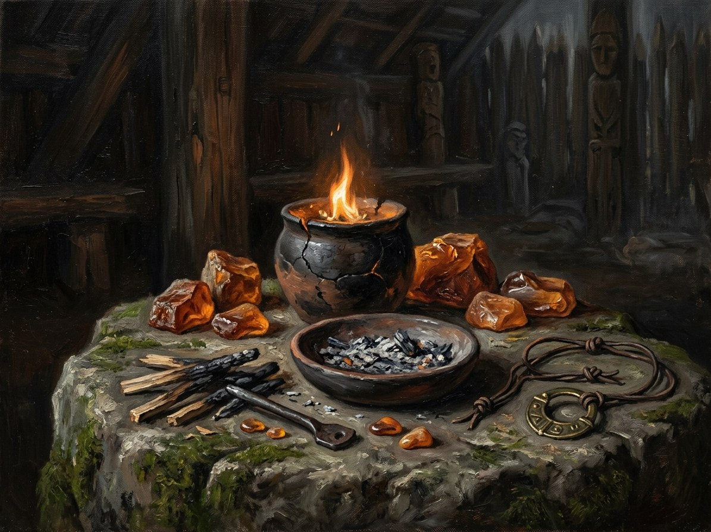

Ugnis (Fire)¶
Deity & zenith¶
Deity: Gabija, the hearth and sacred fire. Incantation: Ugnis tau degs („Fire for you shall burn“), man for oneself. Medium: living fire. Zenith: Rasos, summer-solstice noon (~13–14 June in 1382), when the cost is halved and Gabija’s fire is deadly to unholy things; doubled in rain or floods.
Ugnis (Fire)

Ugnis (Fire) · element¶
Tipas |
element |
Incantation |
Ugnis tau degs |
Zenith |
Rasos |
Pastaba |
Ugnis (Fire): the element of soul armour, purification, light, and warmth. |
Boon¶
Soul Armour and strength: warming, kindling, bracing the spirit against the dark half of the year. At its simplest it keeps a dying flame alive. It is also the craft of the vaidilutės who tend the sacred flames.
Minor / major cost¶
Minor (a candle’s length): exhaustion. Major (a night, an army, a life): soul-chill: empathy gone for days; the caster can kill without feeling. On the page the chill is physical and climbs from the fingers: legs, elbows, shoulders, and „a gap where something was“ (Book II ch. 2, 11; Book IV ch. 3).
Limits¶
Doubled in rain and floods. The Iron Saint’s knights are immune to Fire’s terror. Consecrated stone doubles the cost. A sacred flame cannot guard itself: killed flames throw off užgesilės.
Uses in the books¶
Book II ch. 2: in the island castle’s wet foundations Vytautas whispers Ugnis tau degs to the failing Last Flame; the spring damp doubles the cost, the chill climbs to his elbow, and Birutė is no longer there to share it. Ch. 11: a one-candle working in the rain on the lake, the cost doubled, his legs going first. Book IV ch. 3: he lights Samogitian hearths with a pinch of vault ash „with an iron tint“. Book I ch. 29 and the secret flame: the baptism.
- Element
- Fire · deity Gabija, the hearth and sacred fire. Zenith Rasos, summer-solstice noon
- Tier
- Tier 2 (minor, one element) or 3 and up; the craft of the vaidilutės who tend the sacred flames
- Casting
- Ugnis tau degs aloud. Man for oneself
- Components
- Living fire; true intent
- Cost
- Minor: exhaustion. Major: soul-chill, empathy gone for days; the caster can kill without feeling
- Duration
- A candle's length to a night
- Limits
- Doubled in rain or floods; consecrated stone doubles it. A sacred flame cannot guard itself
- Counters
- Rain and flood; consecrated stone; the Iron Saint's knights, who are immune to Fire's terror
Soul Armour. Warming, kindling, bracing the spirit against the dark half of the year. At its simplest it keeps a dying flame alive.
Soul-chill. The chill climbs from the fingers: legs, elbows, shoulders, and a gap where something was (Book II ch. 2, 11; Book IV ch. 3).
Damp. In the half-flooded island foundations the spring damp doubles the cost, and Birutė is no longer there to share it (Book II ch. 2).
Desecration. Spitting into the fire or stepping over it is sacrilege.
Killed flames. Their sparks become užgesėlės.
Sąsajos¶
graph LR
el_fire["Ugnis (Fire)"]
gabija["Gabija"]
kalba["Senovės Kalba"]
kalba -->|Uses element| el_fire
gabija -->|Element| el_fire
style el_fire stroke-width:3px